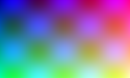

Icons and generated glyphs
Preserve drawing geometry and useful color. Pale, multicolor and noninteractive artwork are contrasting controls.
Transparent and opaque artwork
Real PNG, SVG and GIF files. Static silhouettes may adapt; multicolor art must retain its palette. Animation must not be classified from a single frame.
Single-ink SVG
Single-ink PNG
Synthetic mixed wordmark · original light brand context
Multicolor PNG negative
Static silhouette
Static transparent GIF · heading/light-background context
Animated silhouette
Animated GIF · preserve frames; retain light backing when needed
Multicolor GIF negative
Opaque GIF negative

Opaque artwork negative
Preserve a necessary image-only padded backing as a whole
Captioned mixed wordmark · retain a necessary light backing
Captioned static GIF · verified single ink may adapt
Captioned animated GIF · preserve frames on the original light backing
Selectors and controls
Check label, placeholder, custom background arrow, native popup, disabled states, focus and button text independently.
Border geometry and emphasis
Off preserves visual weight and dimensions. Stronger levels must increase emphasis monotonically, preserve transparent reservation and retain focus feedback.
Surfaces, gradients and text
Do not manufacture a gradient behind plain text. Image-backed text requires pixel evidence. Numeric tile contrast remains advisory when appearance is accepted.